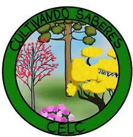

O QUE É?
O projeto “Cultivando saberes: educação socioambiental para escolas sustentáveis” desenvolve uma série de ações relacionadas à questão da sustentabilidade socioambiental no Colégio Estadual Leôncio Correia, uma escola pública localizada no município de Curitiba (PR)-Brasil, a fim de promover a transformação da escola em um espaço educador sustentável. Vencedor nacional no desafio Escolas Sustentáveis, promovido pela ONU e organizado pelo Instituto Akatu, que visa promover a temática da sustentabilidade na Educação Básica, a escola recebeu um financiamento de R$ 105 mil para desenvolver as ações previstas no plano de ação, cuja primeira etapa foi executada em 2020. O desafio Escolas Sustentáveis integra um esforço global para promoção de formas sustentáveis de produção e consumo vinculado à agenda 2030 para o Desenvolvimento Sustentável da Organização das Nações Unidas, dentro do programa de Produção e Consumo Sustentáveis (10YFP) coordenado pelo One Planet Network.
OBJETIVOS:
Construir um espaço educador sustentável que promova comportamentos e valores comprometidos com a sustentabilidade socioambiental em 4 dimensões: currículo, gestão, espaço físico e comunidade escolar; Desenvolver e institucionalizar práticas pedagógicas interdisciplinares de ensino, pesquisa e extensão voltadas à questão socioambiental; Transformar a escola em um centro de referência em sustentabilidade socioambiental, promovendo eventos e capacitando a comunidade escolar em relação ao tema;
O QUE SÃO ESCOLAS SUSTENTÁVEIS?
“aquelas que mantêm relação equilibrada com o meio ambiente e compensam seus impactos com o desenvolvimento de tecnologias apropriadas, de modo a garantir qualidade de vida às presentes e futuras gerações. Esses espaços têm a intencionalidade de educar pelo exemplo e irradiar sua influência para as comunidades nas quais se situam. A transição para a sustentabilidade nas escolas é promovida a partir de três dimensões inter-relacionadas: espaço físico, gestão e currículo.” (Manual Escolas Sustentáveis – MEC 2013) “trata-se de um local onde se desenvolvem processos educativos permanentes e continuados, capazes de sensibilizar o indivíduo e a coletividade para a construção de conhecimentos, valores, habilidades, atitudes e competências voltadas para a construção de uma sociedade de direitos, ambientalmente justa e sustentável. Uma escola sustentável é também uma escola que respeita os direitos humanos e a qualidade de vida e que valoriza a diversidade.” (Vamos cuidar do Brasil com escolas sustentáveis – MEC 2012)
CENTRO DE EDUCAÇÃO SOCIOAMBIENTAL
O Centro de Educação Socioambiental é um espaço multifuncional integrado à área da escola, onde são desenvolvidas as atividades de vermicompostagem, horta escolar, captação e reuso da água da chuva, estação de energia solar, criação de abelhas nativas, entre outras. Planejado dentro dos princípios da bioconstrução, da permacultura e construído com tecnologias sustentáveis, sedia as atividades relacionadas à temática socioambiental, no formato de aulas, laboratórios, oficinas, encontros de formação, eventos e reuniões. Esse espaço educador sustentável estrutura-se em dois pilares: o CONVÍVIO EDUCADOR e o CICLO DA VIDA. O convívio educador perpassa todas as etapas da vida, sem um final, é um ciclo. O ciclo da vida representará outras possibilidades de vida e produção, quebrando com a ideia de uma economia/produção linear a partir da ideia de economia circular, em que tudo se transforma e se (re)aproveita, associada metaforicamente ao ciclo da natureza e do alimento como exemplo dessas relações (plantio/nascer, colheita/crescer, alimentação/reproduzir, compostagem/morrer e novamente plantio).
BNCC
O desenvolvimento do projeto se dará de forma interdisciplinar a partir do arcabouço teórico-metodológico das disciplinas componentes da Base Nacional Curricular Comum. Dessa forma, busca-se antecipar o que preconiza a BNCC no que tange à construção de um currículo interdisciplinar através de atividades colaborativas que favoreçam o protagonismo dos estudantes a partir de oficinas, laboratórios, incubadoras e núcleos de criação artística. Além disso, pretende-se incentivar o desenvolvimento das habilidades e competências específicas previstas na BNCC, conforme as áreas de conhecimento, itinerários formativos, componentes curriculares e adequados à etapa de ensino (Fundamental II e Ensino Médio).
O ESPAÇO CULTIVANDO SABRES CONTA COM :
Canteiros, Composteiras, Centro de educação socioambiental, Adubação de inverno, Sistema de captação e reuso de água da chuva, Energia solar e Pluviômetro
VISITA AO COLEGIO

A esquerda Marcelo Monteiro diretor geral do colegio estadual leoncio Correia, ao centro a deputada Carol Dartora, e a direita profesor Gabriel Sorrentino, fundador do projeto cultivando saberes no colegio.